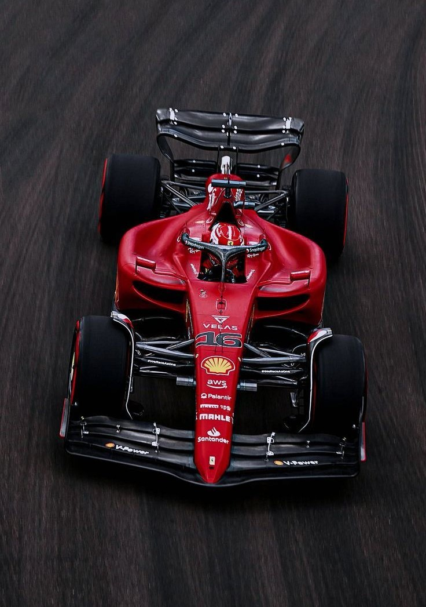
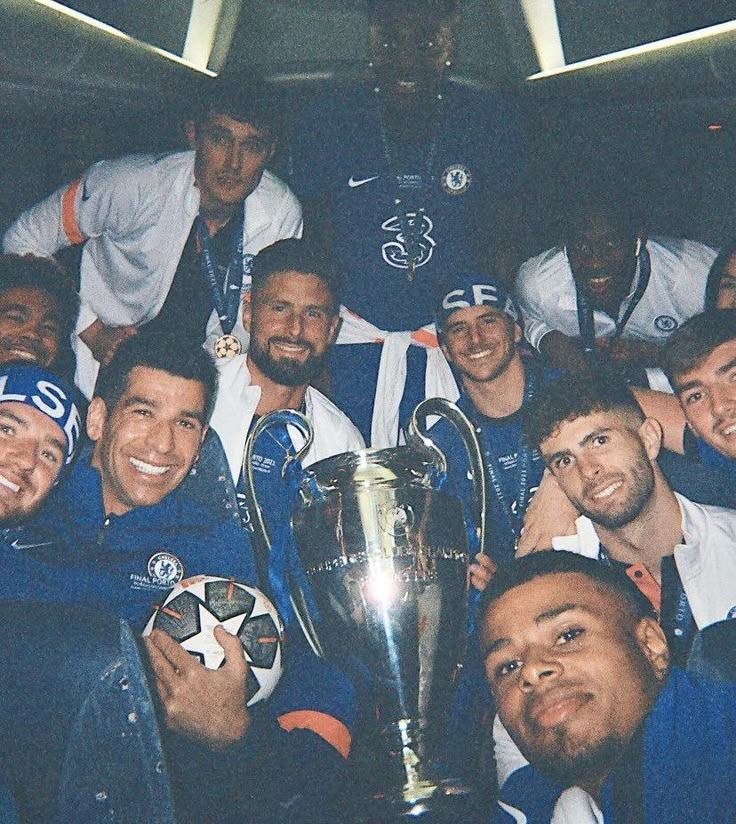
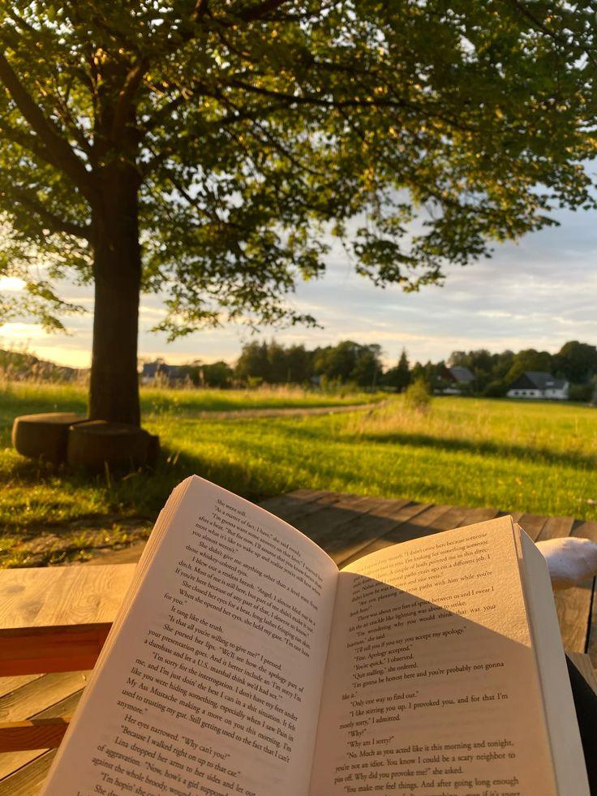

Formula 1
I’ve been obsessed with Formula 1 for as long as I can remember. I support Ferrari,
although they constantly test my patience, but I wouldn’t have it any other way.
This season, I’ve been keeping a close eye on drivers like Alex Albon, Carlos Sainz,
Yuki Tsunoda, and Isack Hadjar. There’s something really exciting about the mix of strategy,
speed and unpredictability that makes every race feel like an event. Whether it's a chaotic
street circuit or a classic like Spa, I love following every moment.

Football
Football is another big part of my life. I’m a Chelsea fan through and through,
even when we’re struggling in the league. My favourite player of all time has to be
Eden Hazard - no one could glide across the pitch quite like he did. Watching
Chelsea play has become a bit of a tradition in my week, and I love how football
brings people together, whether it's watching games with friends or debating
line-ups online.

Reading
I also love to read. There’s nothing quite like getting lost in a good book.
I’m always looking for recommendations and love sharing what I’ve read too.
You can follow me on Fable to see my latest reads and reviews. So far, my
favourite book this year has been The Nightingale - it’s emotional, beautifully
written and has stuck with me long after I finished it.
